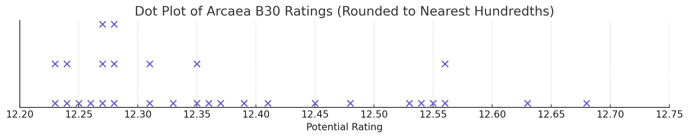
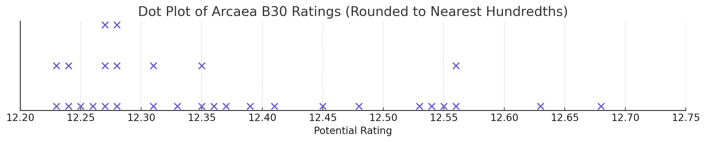

Analyzing the Distribution of My Best 30 Scores in Arcaea
Arcaea is a mobile rhythm game where players tap notes to the beat of a song, judged by timing accuracy. A player’s skill is measured using a metric called Potential, which is mostly calculated by the top 30 scores that a player has made (known as the Best 30, or B30). Each score is weighted by the difficulty constant of the chart and the actual achieved score.
To evaluate how my B30 scores are distributed, I used the data from my profile (shown above) to generate a dot plot, giving a visual insight into how closely my scores are clustered and where most of my skill level lies.
 

The distribution is mostly skewed to the right, and most values appear to be clustered around the 12.20 to 12.40 range.
There are no extreme outliers or gaps, but some of the higher values clearly stand apart from the rest. This suggests that although I can achieve higher scores, they are less consistent across the full set of 30. Here’s a breakdown of some key statistical observations from my B30 data:
| Statistic | Value |
|---|---|
| Mean | 12.375 |
| Median | 12.336 |
| Range | 0.442 (12.676 - 12.235) |
| Standard Deviation | 0.132 |
The small standard deviation indicates that most scores are tightly clustered around my average (mid 12.30s), showing strong consistency in performance. However, the relatively large range of 0.442 highlights that my top-end performance potential is significantly higher than my lower B30 scores, which means I have a high skill ceiling but need more consistency to raise my overall Potential.